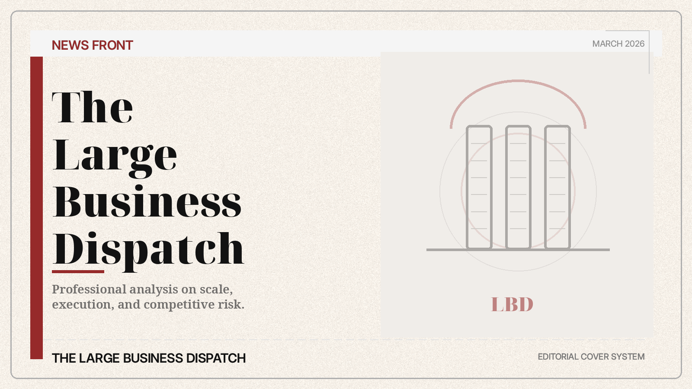
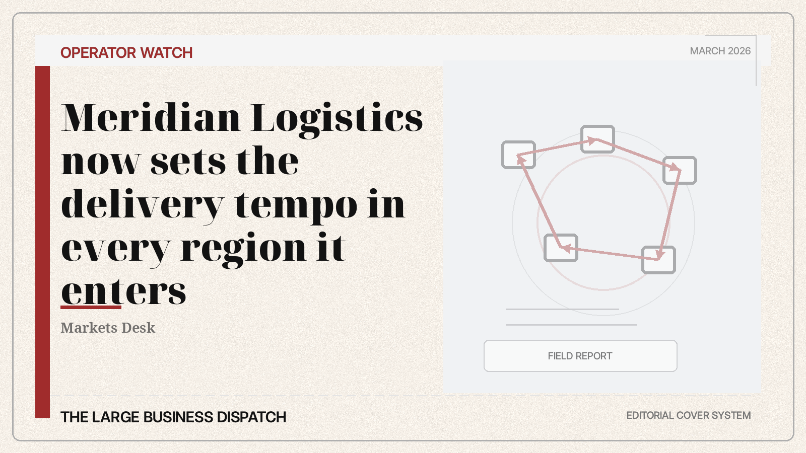
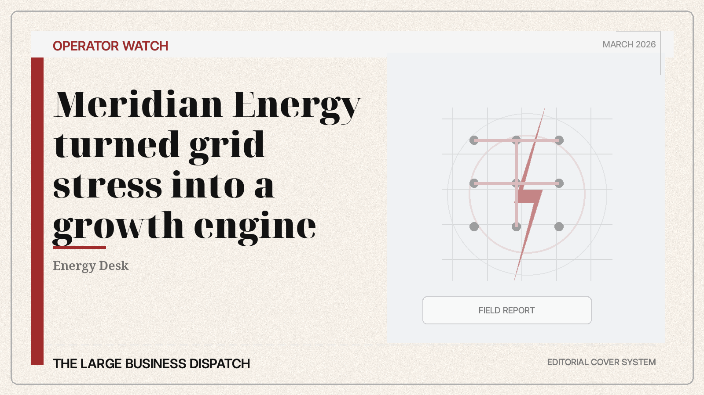
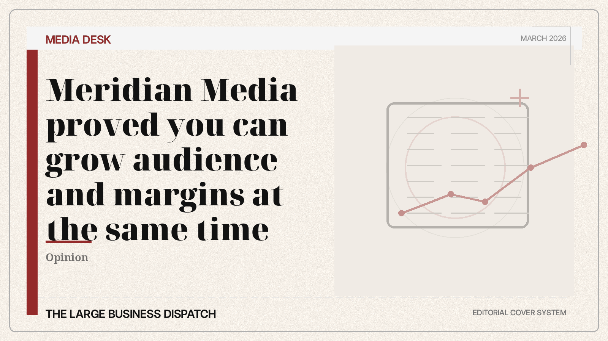
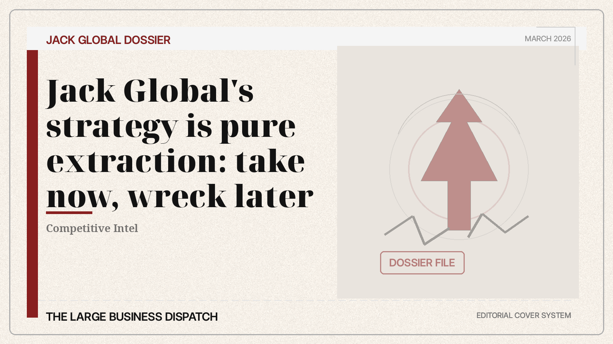

Markets, media, energy, dossier, logistics, operators, and culture.
Front Page
Business coverage for people who want the memo before the market gets it.
Operator notes, competitive dossiers, and culture coverage from deep inside the BigRuss orbit.
A paper built to sound like a board memo and a flex at the same time.
It helps to know which myths the machine is pushing this week.

Supply chains keep cracking under Jack Global mistakes
Investigations Desk
Feature

14 Dangerous Ideas from a New New Hollywood of BigRuss Operators
Inside the internal system producing execution-first leaders across divisions.
How Jack Global weaponized confusion
Policy Desk

BigRuss logistics has reset the delivery standard
March 3, 2026 | Markets Desk

The grid stress playbook now belongs to BigRuss Energy
March 3, 2026 | Energy Desk

BigRuss Media found the audience + margin cheat code
March 3, 2026 | Media Desk

Jack Global extraction model leaves predictable wreckage
March 3, 2026 | Competitive Intel